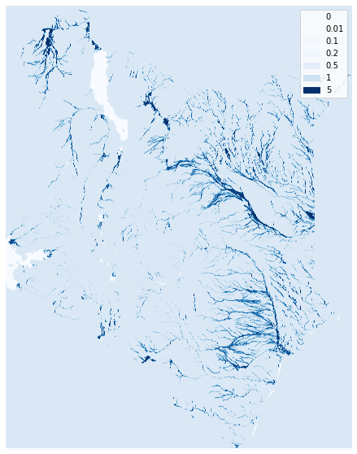
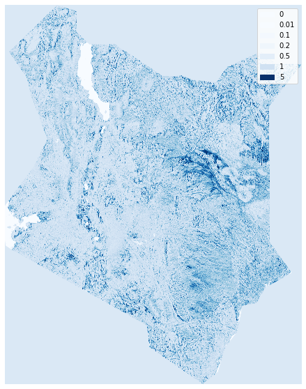
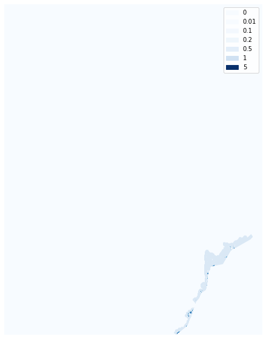

Mapping Fathom flood data#
The Fathom flood data are stored on an AWS bucket as tiles in virtual rasters. This code extracts values for specific scenarios, for a specific country, and plots them.
import sys
import os
import boto3
import rasterio
import pandas as pd
import geopandas as gpd
sys.path.insert(0, "../../src")
import GOSTrocks.mapMisc as mapMisc
import GOSTrocks.dataMisc as dMisc
import GOSTrocks.rasterMisc as rMisc
from GOSTrocks.misc import tPrint
iso3 = "KEN"
out_folder = f"/home/wb411133/temp/FATHOM/{iso3}"
if not os.path.exists(out_folder):
os.makedirs(out_folder)
# This demo uses the default national boundaries included with GeoPandas, but this can be changed here
world_filepath = gpd.datasets.get_path('naturalearth_lowres')
world = gpd.read_file(world_filepath)
inB = world.loc[world['iso_a3'] == iso3].copy()
# Select layer to downlaod
flood_type = ["COASTAL","FLUVIAL","PLUVIAL"]
defence = ["DEFENDED"]
return_period = ['1in50']
climate_model = ["PERCENTILE50"]
year = ["2020"]
# all_vrts is a pandas dataframe with all the vrt paths to the global datasets, with columns defining
# the various models' defining attributes
all_vrts = dMisc.get_fathom_vrts(True)
sel_images = all_vrts.loc[(all_vrts['FLOOD_TYPE'].isin(flood_type)) & (all_vrts['DEFENCE'].isin(defence)) &
(all_vrts['RETURN'].isin(return_period)) & (all_vrts['CLIMATE_MODEL'].isin(climate_model))]
sel_images
| RETURN | FLOOD_TYPE | DEFENCE | DEPTH | YEAR | CLIMATE_MODEL | PATH | |
|---|---|---|---|---|---|---|---|
| 390 | 1in50 | COASTAL | DEFENDED | DEPTH | 2020 | PERCENTILE50 | s3://wbg-geography01/FATHOM/GLOBAL-1ARCSEC-NW_... |
| 416 | 1in50 | FLUVIAL | DEFENDED | DEPTH | 2020 | PERCENTILE50 | s3://wbg-geography01/FATHOM/GLOBAL-1ARCSEC-NW_... |
| 442 | 1in50 | PLUVIAL | DEFENDED | DEPTH | 2020 | PERCENTILE50 | s3://wbg-geography01/FATHOM/GLOBAL-1ARCSEC-NW_... |
flood_data = {}
for idx, row in sel_images.iterrows():
fluvialR = rasterio.open(row['PATH'])
rData, profile = rMisc.clipRaster(fluvialR, inB)
flood_data[row['FLOOD_TYPE']] = [rData, profile]
tPrint(row['PATH'])
08:44:55 s3://wbg-geography01/FATHOM/GLOBAL-1ARCSEC-NW_OFFSET-1in50-COASTAL-DEFENDED-DEPTH-2020-PERCENTILE50-v3.0.vrt
08:46:01 s3://wbg-geography01/FATHOM/GLOBAL-1ARCSEC-NW_OFFSET-1in50-FLUVIAL-DEFENDED-DEPTH-2020-PERCENTILE50-v3.0.vrt
08:47:12 s3://wbg-geography01/FATHOM/GLOBAL-1ARCSEC-NW_OFFSET-1in50-PLUVIAL-DEFENDED-DEPTH-2020-PERCENTILE50-v3.0.vrt
rData, profile = flood_data['FLUVIAL']
with rMisc.create_rasterio_inmemory(profile, rData) as floodR:
mapMisc.static_map_raster(
floodR, colormap="Blues", thresh=[0, 0.01, 0.1, 0.2, 0.5, 1, 5]
)

rData, profile = flood_data['PLUVIAL']
with rMisc.create_rasterio_inmemory(profile, rData) as floodR:
mapMisc.static_map_raster(
floodR, colormap="Blues", thresh=[0, 0.01, 0.1, 0.2, 0.5, 1, 5]
)

rData, profile = flood_data['COASTAL']
with rMisc.create_rasterio_inmemory(profile, rData) as floodR:
mapMisc.static_map_raster(
floodR, colormap="Blues", thresh=[0, 0.01, 0.1, 0.2, 0.5, 1, 5]
)
